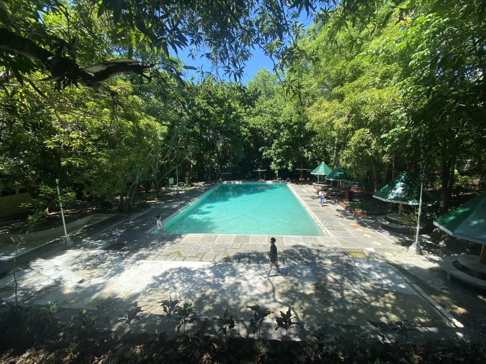
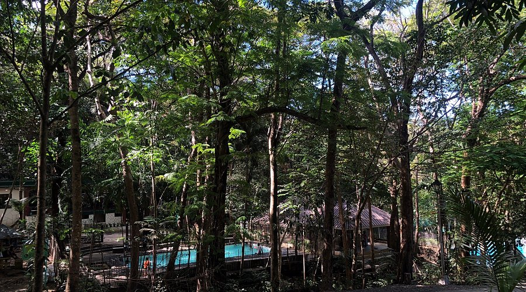
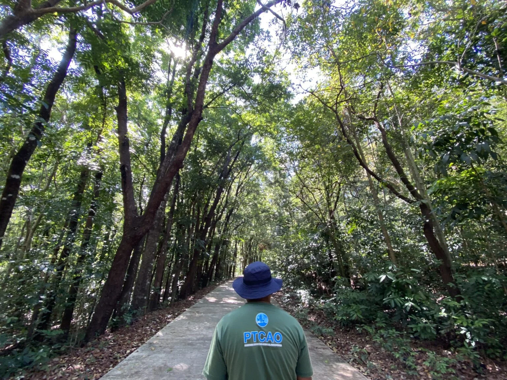

Manleluag Spring National Park, officially designated as the Manleluag Spring Protected Landscape, is a protected natural area in Barangay Malabobo, Mangatarem, Pangasinan, Philippines. It is known for its geothermal hot springs, diverse wildlife, and lush forest ecosystems within the Zambales Mountain Range.
Geography and Natural Features

Manleluag Spring National Park is centered around two ophiolitic hot springs near the slopes of the extinct Mount Malabobo. These springs produce highly alkaline waters that emerge from the serpentinizing rocks of the Zambales ophiolite, forming natural hot spring pools within a lush tropical forest.
Streams such as the Baracbac and Basican rivers feed a network of forested pools, creeks, and shaded pathways that invite visitors to explore the verdant mountain environment. The terrain ranges from gently rolling hills to moderately steep forest slopes.
Tropical vegetation covers much of the park, creating a cooler and greener setting than Pangasinan's coastal areas. The park offers a refreshing retreat where forest landscapes and geothermal waters meet.
History and Legal Status
Manleluag was first established as a forest reserve in 1934 under Proclamation No. 659 to protect its unique springs and surrounding forest land. In 1940, it became a national park through Proclamation No. 612 signed by President Manuel L. Quezon.
In 2004, the area was reclassified as a protected landscape under Proclamation No. 576, signed by President Gloria Macapagal Arroyo in accordance with the National Integrated Protected Areas System Act. This expanded both its protection and its ecological management.
Today, the park is managed with policies designed to balance recreation and conservation, preserving its geological and ecological value while allowing responsible public access.
Biodiversity

The park supports a rich array of wildlife and plant life thanks to its variety of habitats. It is home to more than 90 bird species, including the Philippine frogmouth, rufous hornbill, and flame-breasted fruit dove.
Its forest also supports mammals such as the Philippine deer and warty pig, adding to the ecological richness of the area. Research has also found that the hot springs themselves host specialized microbial communities adapted to extreme alkalinity.
These qualities make the park important not only for biodiversity but also for scientific study and conservation.
Recreation and Tourism

Accessible via the Pangasinan-Tarlac Road, Manleluag Spring National Park offers a refreshing escape with a variety of outdoor experiences. Visitors can bathe in natural hot spring pools, hike forest trails, and enjoy picnic areas for family outings and group gatherings.
A viewing tower within the park offers scenic vistas of Pangasinan's green landscape, while ranger-led trails allow visitors to engage more deeply with the surrounding nature.
The park's trails range from easy walks to more adventurous treks, making it appealing to both casual visitors and nature enthusiasts. Its hot spring pools and forest setting provide a calm and restorative experience.